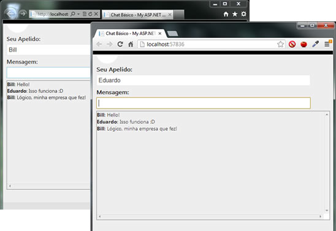

The ASP.NET SignalR is an open source library that facilitates the implementation of real-time communication, updates / notifications asynchronously in an application.
The SignalR ASP.Net is an abstraction of a connection, it works behind the scenes setting the best type of transport in two different levels of abstraction which causes an impression of a persistent connection.
How to start?
You need Visual Studio 2010 SP1 or Visual Studio 2012
Start a project ASP.Net MVC
Install ASP.Net SignalR Nuget by:
Install-Package Microsoft.AspNet.SignalR
Install-Package Microsoft.AspNet.SignalR
C#Editar Script|Removecsharppublic class ChatController : Controller { public ActionResult Index() { return View(); } }public class ChatController : Controller { public ActionResult Index() { return View(); } }
Create a View
@{
ViewBag.Title = "Chat Básico";
}
<label for="apelido" >Seu Apelido:</label><input type="text" name="apelido" id="apelido" /><br />
<label for="mensagem" >Mensagem:</label><input type="text" name="mensagem" id="mensagem" maxlength="100" />
<div id="chatWindow" style="width: 100%; height: 300px; overflow: scroll; border: 1px solid grey"></div>
<!-- Referenciando os scripts adicionados ao Bundle -->
@Scripts.Render("~/bundles/jquery")
@Scripts.Render("~/bundles/SignalR")
<!-- Referencia para o script de Hub criado automaticamente -->
<script src="/signalr/hubs" type="text/javascript"></script>
<script type="text/javascript">
$(function () {
// Declarando um proxy de referencia ao Hub
var chatHub = $.connection.chat;
// Criando a função que será chamada pelo Hub para distribuir as mensagens aos clientes.
// Por convenção as chamadas aos métodos são feitas em "camelCase"
chatHub.transmitirMensagem = function (apelido, msg) {
// Area do chat
var chatWin = $("#chatWindow");
// Publicando a mensagem no chat
chatWin.html(chatWin.html() + "<b>" + apelido + "</b>: " + msg + "<br />");
};
// Iniciando a conexão com o Hub
$.connection.hub.start();
// Validando o botão enter
$(document).keypress(function (e) {
if (e.which == 13) {
// Chamando o método de transmissão de mensagem no Hub
chatHub.enviarMensagem($("#apelido").val(), $("#mensagem").val());
// Limpando o texto da mensagem.
$("#mensagem").val("");
}
});
});
</script>
@{ ViewBag.Title = "Chat Básico"; } <label for="apelido" >Seu Apelido:</label><input type="text" name="apelido" id="apelido" /><br /> <label for="mensagem" >Mensagem:</label><input type="text" name="mensagem" id="mensagem" maxlength="100" /> <div id="chatWindow" style="width: 100%; height: 300px; overflow: scroll; border: 1px solid grey"></div> <!-- Referenciando os scripts adicionados ao Bundle --> @Scripts.Render("~/bundles/jquery") @Scripts.Render("~/bundles/SignalR") <!-- Referencia para o script de Hub criado automaticamente --> <script src="/signalr/hubs" type="text/javascript"></script> <script type="text/javascript"> $(function () { // Declarando um proxy de referencia ao Hub var chatHub = $.connection.chat; // Criando a função que será chamada pelo Hub para distribuir as mensagens aos clientes. // Por convenção as chamadas aos métodos são feitas em "camelCase" chatHub.transmitirMensagem = function (apelido, msg) { // Area do chat var chatWin = $("#chatWindow"); // Publicando a mensagem no chat chatWin.html(chatWin.html() + "<b>" + apelido + "</b>: " + msg + "<br />"); }; // Iniciando a conexão com o Hub $.connection.hub.start(); // Validando o botão enter $(document).keypress(function (e) { if (e.which == 13) { // Chamando o método de transmissão de mensagem no Hub chatHub.enviarMensagem($("#apelido").val(), $("#mensagem").val()); // Limpando o texto da mensagem. $("#mensagem").val(""); } }); }); </script>
public class Chat : Hub
{
public void EnviarMensagem(string apelido, string mensagem)
{
Clients.TransmitirMensagem(apelido, mensagem);
}
}
public class Chat : Hub { public void EnviarMensagem(string apelido, string mensagem) { Clients.TransmitirMensagem(apelido, mensagem); } }
Description
When running the project open a second instance of a Web browser (try different browsers) and test the chat conversation.

It's incredibly easy, is not it? The client calls methods on the Hub (server) as if they were local methods and the methods call methods on the server client as if they were methods on the server.
I want to know and learn more!
Read these two sites:
Watch this great video that was recorded at TechEd 2012 by one of the developers of SignalR ASP.Net.
Read this Free eBook MVP JM Aguilar, I've read and recommend (English)
The example of the chat is the most simple and classic to use in real-time communication, but the possibilities of use are endless, add SignalR ASP.Net on your expertise and make profit.
See more at:
http://eduardopires.net.br/2013/04/aspnet-signalr-introducao-e-utilizacao/